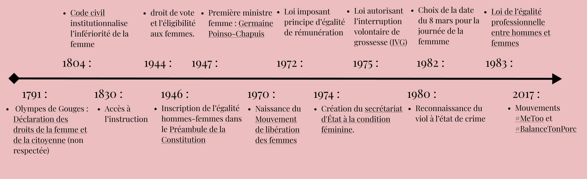

Le rôle des hommes dans le féminisme, militants oubliés
Lorsque l’on parle féminisme, on pense souvent à des femmes qui se battent pour les femmes. Cependant, les hommes ont également participé à leur émancipation.
Le féminisme est un enjeu important de notre société d’aujourd’hui et le sera encore plus pour construire celle de demain. Plusieurs féministes, femmes comme hommes ont influencé ce concept qui reste malgré tout difficile à cerner. Nous verrons à travers plusieurs articles des côtés plus inconnus du féminisme, mais également les grandes figures qui l’ont marqué et qui continuent de le faire avancer aujourd’hui.

Lorsque l’on parle féminisme, on pense souvent à des femmes qui se battent pour les femmes. Cependant, les hommes ont également participé à leur émancipation.

Michelle Obama est une actrice importante du féminisme actuel. Très investie, elle fait de nombreux discours pour promouvoir les valeurs du féminisme dans le monde.
Le film Les figures de l’ombre Théodore Melfi traite du féminisme avec finesse. On observe 3 jeunes femmes confrontées au racisme et au sexisme de la société des années 60.